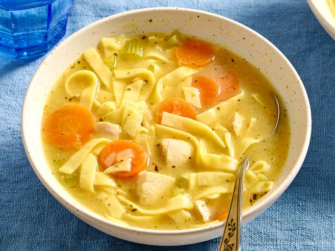

Chicken Noodle Soup
Home

Description
Warm your soul with a bowl of this timeless, restorative chicken noodle soup.
Built on a foundation of aromatic mirepoix—sautéed onions, carrots, and celery—and a rich, herb-infused broth, this recipe is like a warm hug in a bowl.
We use tender shredded chicken and thick, al dente egg noodles to create a hearty texture that satisfies.
It’s the ultimate easy-to-follow remedy for chilly evenings or whenever you need a little extra comfort.
Ingredients
- 1 tablespoon butter
- ½ cup chopped onion
- ½ cup chopped celery
- 4 (14.5 ounce) cans chicken broth
- 1 (14.5 ounce) can vegetable broth
- 1 ½ cups egg noodles
- 8 ounces chopped cooked chicken breast
- 1 cup sliced carrots
- ½ teaspoon dried oregano
- salt and ground black pepper to taste
Steps
- Melt butter in a large pot over medium heat. Add onion and celery; cook until just tender, about 5 minutes.
- Stir in chicken broth, vegetable broth, egg noodles, chicken, carrots, basil, oregano, salt, and black pepper to combine; bring to a boil.
- Reduce heat; simmer for 20 minutes.
- Serve and enjoy!